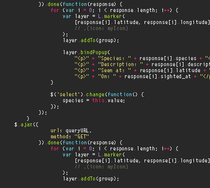
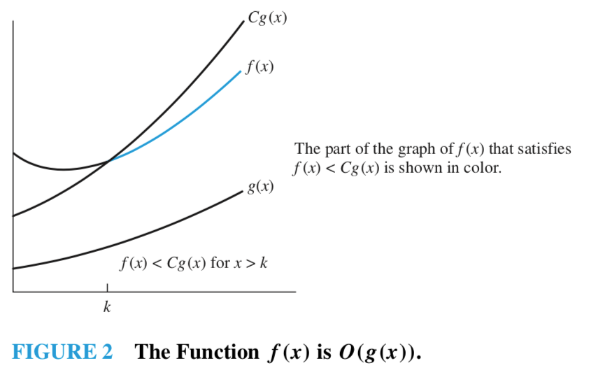
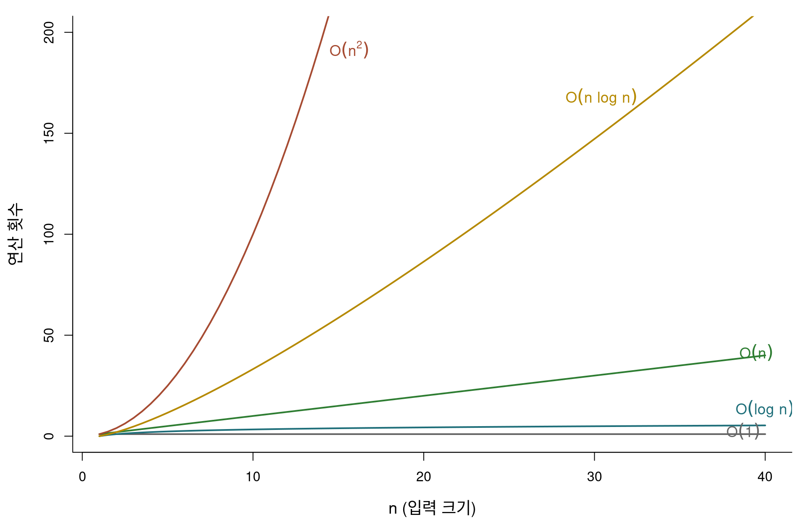
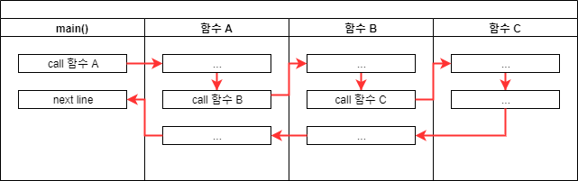
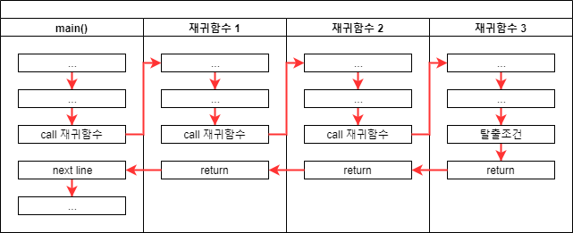
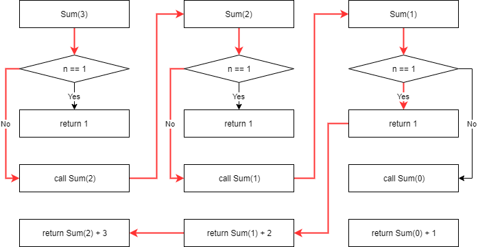
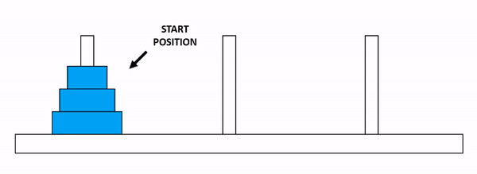
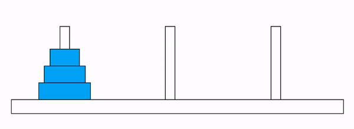

알고리즘
통계 프로그래밍 언어 — 개편 8장 초안
1 알고리즘
중요
학습 목표
- 동일한 결과를 산출하는 두 코드의 비용 차이를 설명하고, 어느 쪽이 왜 효율적인지 근거를 제시할 수 있다.
- 반복문의 시간 복잡도를 빅오 표기법(\(\mathcal{O}\))으로 표현하고, 코드로부터 복잡도의 차수를 판별할 수 있다.
- 재귀 함수의 종료 조건을 명세하고, 종료 조건이 성립하지 않는 입력을 스스로 구성해 확인할 수 있다.
- 탐색·정렬 알고리즘을 구현하고, 구현의 정확성을 전수 검사와 경계 사례로 검증할 수 있다.
- 사람이 작성한 코드와 AI 가 생성한 코드 모두에서, 타당해 보이는 구현의 잘못된 경계 처리를 찾아낼 수 있다.
이 장의 목적은 알고리즘을 암기하는 데 있지 않고, 어떤 코드가 왜 더 많은 비용을 요구하는지 판단하는 능력을 기르는 데 있다. 알고리즘을 직접 구현할 일은 점차 줄어들지만, 주어진 코드가 입력 규모가 커진 상황에서도 유효한지 판단할 일은 오히려 늘어난다. 이 장에서는 그 판단에 필요한 최소한의 도구를 다룬다.
1.1 알고리즘과 비용
노트
알고리즘(algorithm): 주어진 문제를 해결하기 위해 정해진 일련의 절차를 단계적으로 표현한 것. 즉 문제 해결에 필요한 계산 절차 또는 처리 과정의 순서.
알고리즘이라 부르려면 다음을 만족해야 한다.
- 명확성: 각 단계가 모호하지 않게 기술된다.
- 유일성: 각 단계의 다음 단계가 하나로 결정된다.
- 입력과 출력: 정의된 입력을 받아 결과를 산출한다.
- 유한성: 유한한 수의 단계를 거쳐 반드시 종료한다.
- 일반성: 정의된 입력 전체에 대해 동작한다.
이 가운데 실제 구현에서 가장 자주 위반되는 조건은 유한성과 일반성이다. “특정 예제에서 올바르게 동작한다”는 것과 “정의된 입력 전체에서 올바르게 동작한다”는 것은 전혀 다른 진술이며, 이 장에서는 그 차이를 반복해서 다룬다.
1.1.1 같은 답, 다른 비용
아래 두 프로그램은 1부터 n 까지의 값을 담은 벡터를 생성한다. 두 결과는 완전히 동일하다.
힌트
예측해 보자: n 이 5만일 때 두 프로그램의 실행 시간은 얼마나 차이 나겠는가? 비슷한 수준인가, 두 배 정도인가, 그보다 큰가? 실행하기 전에 적어 보자.
# 프로그램 1: 벡터를 미리 할당한 뒤 각 위치에 값을 대입한다
prealloc_vec <- function(n) {
x <- numeric(n)
for (i in seq_len(n)) {
x[i] <- i
}
x
}
# 프로그램 2: 반복할 때마다 벡터를 이어 붙여 길이를 늘린다
grow_vec <- function(n) {
x <- NULL
for (i in seq_len(n)) {
x <- c(x, i)
}
x
}
# 두 결과가 동일한지 먼저 확인
identical(prealloc_vec(1000), as.numeric(grow_vec(1000)))[1] TRUE두 함수의 결과가 동일함을 확인했으므로 이제 비용을 측정한다.
n <- 50000
t1 <- system.time(prealloc_vec(n))[["elapsed"]]
t2 <- system.time(grow_vec(n))[["elapsed"]]
data.frame(
방식 = c("사전 할당", "이어 붙이기"),
초 = c(t1, t2)
)예측과 일치하는가? 두 배 정도의 차이를 예상했다면 실제 결과와 상당한 차이가 있을 것이다. n 을 10배로 늘리면 격차는 다시 크게 벌어진다. x <- c(x, i) 는 반복마다 길이가 1 만큼 늘어난 새 벡터를 할당하고 기존 원소를 전부 복사한다. \(i\) 번째 반복에서 \(i\) 개를 복사하므로 전체 복사량은 \(1 + 2 + \cdots + n = n(n-1)/2\) 에 비례한다. 반면 사전 할당 방식은 이미 확보된 메모리에 값을 대입하므로 반복당 비용이 일정하다.
주의
흔한 오해: 결과가 같으면 두 코드가 동등하다고 판단하는 것. 두 프로그램의 출력은 완전히 동일하지만 비용의 증가율이 다르다. 입력이 작을 때는 이 차이가 드러나지 않다가, 실제 데이터 규모에서 급격히 나타난다.
1.1.2 시간 복잡도와 공간 복잡도
노트
시간 복잡도(time complexity): 알고리즘이 종료할 때까지 수행하는 연산의 횟수. 사칙연산, 비교연산, 반복, 함수 호출이 계수의 대상이다.
공간 복잡도(space complexity): 알고리즘이 종료할 때까지 필요한 메모리의 크기. 변수의 개수, 자료 구조의 크기, 함수 호출로 누적되는 스택 프레임이 대상이다.
앞 절의 두 프로그램을 이 용어로 기술하면 다음과 같다.
- 프로그램 1: 반복이 \(n\) 회이므로 수행 시간은 \(n\) 에 비례한다. 벡터를 미리 할당한 뒤 대입만 하므로 추가 메모리는 증가하지 않는다.
- 프로그램 2: 반복마다 복사가 발생하므로 수행 시간은 \(n^2\) 에 비례한다. 반복마다 새 벡터를 할당하므로 필요한 메모리도 \(n\) 까지 증가한다.
성능은 일반적으로 최악의 경우(worst case) 를 기준으로 평가한다. 최선의 경우는 특정 입력에서만 성립하고, 평균의 경우는 입력 분포를 가정해야 계산할 수 있는 반면, 최악의 경우는 임의의 입력에 대해 항상 성립하는 상한을 제공하기 때문이다.
1.1.3 빅오 표기법
입력 크기를 \(n\), 연산 횟수를 \(f(n)\) 이라 하자. \(n\) 이 충분히 커지면 \(f(n)\) 의 저차항은 영향력을 잃고 증가율이 가장 큰 항만 남는다. 이러한 점근적 증가율을 나타내는 표기가 빅오 표기법이다.
노트
정의: \(x \geq k\) 인 모든 \(x\) 에 대해 \(|f(x)| \leq C|g(x)|\) 를 만족하는 상수 \(k\) 와 \(C\) 가 존재하면 \(f(x) = \mathcal{O}(g(x))\) 라 하고 “\(f\) 는 \(g\) 의 빅오”라고 읽는다.
즉 \(g\) 는 \(f\) 의 점근적 상한이다. 임의의 입력에 대해 \(f\) 는 \(Cg\) 를 넘지 않는다.

코드를 분석할 때 실제로 사용하는 것은 정의 자체보다 다음 세 규칙이다.
힌트
규칙 1 (계수 법칙): \(C > 0\) 이면 \(C f(n) = \mathcal{O}(g(n))\). \(\rightarrow\) 반복 횟수가 \(5n\) 이든 \(100n\) 이든 모두 \(\mathcal{O}(n)\) 이다.
규칙 2 (합의 법칙): 두 부분이 순차적으로 실행되면 증가율이 큰 쪽만 남는다. \(\rightarrow\) \(\mathcal{O}(n) + \mathcal{O}(n^2) = \mathcal{O}(n^2)\). 단, 입력 변수가 서로 다르면 하나로 합쳐지지 않는다. \(\rightarrow\) \(\mathcal{O}(n + m)\).
규칙 3 (곱의 법칙): 반복문이 중첩되면 각 반복 횟수를 곱한다. \(\rightarrow\) \(\mathcal{O}(n) \times \mathcal{O}(n) = \mathcal{O}(n^2)\).
이 세 규칙을 코드에 적용해 보자.
힌트
예측해 보자: 아래 네 함수의 시간 복잡도를 각각 적어 보자. 코드를 실행할 필요는 없으며, 반복 횟수만 세면 된다.
case1 <- function(n) { # (가)
s <- 0
for (i in seq_len(n)) s <- s + i
s
}
case2 <- function(n) { # (나)
s <- 0
for (i in seq_len(5 * n)) s <- s + i
s
}
case3 <- function(n, m) { # (다)
s <- 0
for (i in seq_len(n)) s <- s + i
for (j in seq_len(m)) s <- s + j
s
}
case4 <- function(n) { # (라)
s <- 0
for (i in seq_len(n)) {
for (j in seq_len(n)) s <- s + j
}
s
}답은 차례로 (가) \(\mathcal{O}(n)\), (나) \(\mathcal{O}(5n) = \mathcal{O}(n)\), (다) \(\mathcal{O}(n + m)\), (라) \(\mathcal{O}(n^2)\) 이다. (나)에서 계수 5가 소거되는 것이 규칙 1, (다)에서 두 반복이 하나로 합쳐지지 않는 것이 규칙 2의 단서 조항에 해당하며, (라)는 규칙 3의 사례다.
복잡도의 차수가 한 단계 올라갈 때 연산 횟수가 얼마나 벌어지는지 확인해 보자.
| $n$ | $\mathcal{O}(1)$ | $\mathcal{O}(\log n)$ | $\mathcal{O}(n)$ | $\mathcal{O}(n\log n)$ | $\mathcal{O}(n^2)$ | $\mathcal{O}(2^n)$ |
|---|---|---|---|---|---|---|
| 10 | 1 | 3 | 10 | 33 | 1e+02 | 1,024 |
| 100 | 1 | 7 | 100 | 664 | 1e+04 | 1.3e+30 |
| 1,000 | 1 | 10 | 1,000 | 9,966 | 1e+06 | 1.1e+301 |
\(n = 1000\) 에서 \(\mathcal{O}(n)\) 과 \(\mathcal{O}(n^2)\) 의 연산 횟수는 천 배 차이가 난다. \(\mathcal{O}(2^n)\) 은 \(n = 100\) 에서 이미 관측 가능한 우주의 원자 수를 넘어선다. 차수가 다르면 하드웨어 성능 향상으로 해결할 수 있는 문제가 아니다.

1.2 재귀
재귀 함수(recursive function) 는 자기 자신을 호출하는 함수다. 분할 정복과 같이 원래 문제를 동일한 구조의 더 작은 문제로 환원할 수 있는 경우, 반복문보다 간결하게 표현된다.
일반적인 함수 호출은 호출 지점으로 복귀하는 구조를 갖는다.

재귀 호출 역시 호출 지점으로 복귀하지만, 그 지점이 자기 자신이라는 점이 다르다. 호출할 때마다 호출 스택(call stack)에 새로운 프레임이 누적되므로, 이를 중단시키는 조건이 없으면 함수는 종료되지 않는다.

1.2.1 재귀 함수의 두 부분
모든 재귀 함수는 두 부분으로 이루어진다.
- 종료 조건(base case): 더 이상 분할하지 않고 결과를 직접 반환하는 경우.
- 재귀 단계(recursive step): 문제의 크기를 줄여 자기 자신을 호출하는 경우.
1부터 n 까지의 합을 구하는 함수로 확인해 보자.
recursive_sum <- function(n) {
if (n == 1) return(n) # 종료 조건
n + recursive_sum(n - 1) # 재귀 단계
}
recursive_sum(3)[1] 6
recursive_sum(3)은n이 1이 아니므로recursive_sum(2)를 호출한다.recursive_sum(2)는 같은 이유로recursive_sum(1)을 호출한다.recursive_sum(1)은 종료 조건을 만족하여 1을 반환한다.- 복귀하면서
2 + 1 = 3,3 + 3 = 6이 계산되어 최종적으로 6이 반환된다.
1.2.2 종료 조건이 지키지 못하는 것
위 함수는 정상적으로 동작한다. 그렇다면 “정의된 입력 전체”에 대해서도 그러한가?
힌트
예측해 보자: recursive_sum(0) 은 무엇을 반환하겠는가? 0, 1, 오류 중 어느 것인지 실행하기 전에 답을 정해 두자.
# 이 호출은 종료되지 않는다. 발생하는 오류 메시지를 확인한다.
tryCatch(recursive_sum(0),
error = function(e) cat("오류:", conditionMessage(e), "\n"))오류: evaluation nested too deeply: infinite recursion / options(expressions=)? n 이 0이면 n == 1 은 결코 참이 되지 않는다. 인수가 0, -1, -2, \ldots 로 계속 감소하다가 R 의 중첩 한계에 도달해서야 중단된다. 종료 조건은 “n 이 1일 때”가 아니라 “n 이 1 이하일 때”로 명세했어야 한다. 결함은 입력이 커질 때만 드러나는 것이 아니라, 정의역의 경계 바로 바깥에서도 드러난다.
입력 크기에 따른 한계도 확인해 두자.
recursive_sum(1000) # 정상적으로 동작한다[1] 500500tryCatch(recursive_sum(5000), # 중첩 한계
error = function(e) cat("오류:", conditionMessage(e), "\n"))오류: evaluation nested too deeply: infinite recursion / options(expressions=)? 재귀 호출은 호출마다 스택 프레임을 누적하므로 공간 복잡도가 \(\mathcal{O}(n)\) 이다. R 은 중첩 깊이를 options(expressions) 로 제한하며 기본값은 5000이다. 동일한 계산을 반복문으로 구현하면 공간 복잡도는 \(\mathcal{O}(1)\) 이고 깊이 제한도 없다.
두 문제를 함께 해결한 구현은 다음과 같다.
recursive_sum2 <- function(n) {
if (n <= 1) return(n) # 경계 조건을 포함한다
n + recursive_sum2(n - 1)
}
c(recursive_sum2(0), recursive_sum2(1), recursive_sum2(100))[1] 0 1 5050# 반복문 구현: 공간 복잡도 O(1), 깊이 제한 없음
iterative_sum <- function(n) {
s <- 0
for (i in seq_len(n)) s <- s + i
s
}
c(iterative_sum(0), iterative_sum(100), iterative_sum(100000))[1] 0 5050 5000050000
주의
재귀는 가독성을 얻는 대신 메모리를 소비한다. 호출 깊이가 입력 크기에 비례하는 재귀는 R 에서 실무 코드로 사용하기 어렵다. 재귀 구조로 문제를 먼저 이해한 뒤, 필요하면 반복문으로 변환하는 순서가 안전하다.
1.2.3 계승
계승(factorial)은 재귀적 정의가 그대로 코드로 옮겨지는 대표적인 예다.
\[ n! = \begin{cases} n \times (n-1)!, & n \geq 1 \\ 1, & n = 0 \end{cases} \]
factorial_manual <- function(n) {
if (n == 0) return(1)
n * factorial_manual(n - 1)
}
factorial_manual(10)[1] 3628800factorial(10) # R 내장 함수로 대조[1] 3628800직접 구현한 함수를 내장 함수와 대조하는 이 한 줄이 곧 검증이다. 구현했으면 반드시 정답이 알려진 기준과 대조한다.
1.2.4 하노이 탑
하노이 탑은 재귀 없이는 설명하기 어려운 대표적인 문제다. 기둥 세 개(A, B, C)와 크기가 다른 원판 \(n\) 개가 있고, 원판은 A 에 크기순으로 쌓여 있다. 모든 원판을 C 로 옮기되 (1) 한 번에 하나씩만 옮기고 (2) 큰 원판을 작은 원판 위에 올릴 수 없다.

해법의 핵심은 문제를 한 단계 작은 동일 문제로 환원하는 것이다. \(n\) 개를 A 에서 C 로 옮기는 작업은 다음 세 단계로 분해된다.
- 위쪽 \(n-1\) 개를 A 에서 B 로 옮긴다 (크기만 하나 작은 동일한 문제).
- 가장 큰 원판을 A 에서 C 로 옮긴다.
- B 에 있던 \(n-1\) 개를 B 에서 C 로 옮긴다 (역시 동일한 문제).

move_hanoi <- function(k, from, to, via) {
if (k == 1) {
cat(sprintf("원판 1: %s -> %s\n", from, to))
} else {
move_hanoi(k - 1, from = from, to = via, via = to)
cat(sprintf("원판 %d: %s -> %s\n", k, from, to))
move_hanoi(k - 1, from = via, to = to, via = from)
}
}
move_hanoi(3, "A", "C", "B")원판 1: A -> C
원판 2: A -> B
원판 1: C -> B
원판 3: A -> C
원판 1: B -> A
원판 2: B -> C
원판 1: A -> C원판이 \(n\) 개일 때 필요한 이동 횟수는 \(2^n - 1\) 이다. 호출이 매 단계에서 두 개로 분기하기 때문이다. 즉 이 알고리즘의 시간 복잡도는 \(\mathcal{O}(2^n)\) 이며, 앞의 표에서 확인했듯 \(n\) 이 조금만 커져도 계산이 불가능해진다. 전설에 등장하는 원판 64개는 \(2^{64} - 1\) 회의 이동이 필요하며, 1초에 한 번씩 옮겨도 5천억 년이 넘게 걸린다.
count_moves <- function(k) if (k == 1) 1 else 2 * count_moves(k - 1) + 1
data.frame(원판 = 3:6,
실제_이동 = sapply(3:6, count_moves),
공식 = 2^(3:6) - 1)1.3 탐색과 비용 대비
정렬된 자료에서 특정 값을 찾는 두 가지 방법을 비교한다. 이 절의 목적은 두 알고리즘을 암기하는 것이 아니라, 복잡도의 차수가 다르다는 사실이 실제로 어떤 차이를 만드는지 수치로 확인하는 것이다.
1.3.1 선형 탐색
첫 원소부터 순차적으로 비교한다. 가장 단순하며, 자료가 정렬되어 있지 않아도 적용할 수 있다.
linear_search <- function(target, vec) {
for (i in seq_along(vec)) {
if (vec[i] == target) return(i)
}
NA_integer_
}
set.seed(1)
x <- sort(sample(1:100, 20))
x [1] 1 7 14 21 34 37 39 43 51 54 59 68 73 74 79 82 83 85 87 97linear_search(target = x[13], vec = x)[1] 13linear_search(target = 101, vec = x)[1] NA목표값이 마지막 위치에 있거나 존재하지 않으면 \(n\) 회 모두 비교하게 된다. 따라서 최악의 경우 시간 복잡도는 \(\mathcal{O}(n)\) 이다.
1.3.2 이진 탐색
정렬된 벡터에서는 비교 횟수를 크게 줄일 수 있다. 중앙에 위치한 값과 목표값을 비교하여, 목표값이 더 작으면 오른쪽 절반을, 더 크면 왼쪽 절반을 탐색 범위에서 제외한다. 비교를 한 번 수행할 때마다 후보의 개수가 절반으로 줄어든다.

binary_search <- function(target, ovec) {
lo <- 1L
hi <- length(ovec)
while (lo <= hi) {
mid <- (lo + hi) %/% 2L
if (ovec[mid] == target) {
return(mid)
} else if (ovec[mid] > target) {
hi <- mid - 1L # 오른쪽 절반을 탐색 범위에서 제외
} else {
lo <- mid + 1L # 왼쪽 절반을 탐색 범위에서 제외
}
}
NA_integer_
}
binary_search(target = x[13], ovec = x)[1] 13binary_search(target = 101, ovec = x)[1] NA비교 횟수에 따라 후보의 개수는 \(n, n/2, n/2^2, \ldots\) 로 감소한다. \(k\) 번째 비교에서 후보가 1개가 되므로 \(n/2^k = 1\) 이고, 양변에 밑이 2인 로그를 취하면 \(k = \log_2 n\) 을 얻는다. 따라서 이진 탐색의 시간 복잡도는 \(\mathcal{O}(\log n)\) 이다.
1.3.3 구현이 맞는지 확인하기
여기서 한 가지를 짚고 넘어가야 한다. 위 binary_search() 는 과연 올바른 구현인가? 예제 두 개를 통과했다는 사실이 보장하는 것은 그 두 예제에 대한 정확성뿐이다.
검증의 출발점은 전수 검사다. 벡터의 모든 원소를 차례로 목표값으로 입력하고, 반환된 위치가 실제 위치와 일치하는지 확인한다.
checks <- vapply(seq_along(x), function(i) {
binary_search(target = x[i], ovec = x) == i
}, logical(1))
all(checks)[1] TRUEsum(!checks)[1] 0모든 원소에 대해 통과했다. 이번에는 동일한 알고리즘을 재귀로 작성한 구현을 살펴본다. 아래 구현에는 결함이 있다. 어느 부분이 잘못되었는지 찾아보자.
힌트
예측해 보자: 아래 rbinary_search() 에 벡터의 모든 원소를 입력하면 몇 개나 정확히 찾아내겠는가? 전부인가, 절반인가, 아니면 하나도 찾지 못하는가?
rbinary_search <- function(target, ovec, minL, maxL) {
if (maxL <= minL) return(NA_integer_)
midL <- floor((minL + maxL) / 2)
if (ovec[midL] > target) {
rbinary_search(target, ovec, minL = minL, maxL = midL - 1)
} else if (ovec[midL] < target) {
rbinary_search(target, ovec, minL = midL + 1, maxL = maxL)
} else {
return(midL)
}
}
# 본문 예제 하나만 실행하면 정상으로 보인다
set.seed(2)
k <- sample(x, 1)
c(목표값 = k, 반환 = rbinary_search(k, x, 1, length(x)), 정답 = which(x == k))목표값 반환 정답
79 15 15 예제 하나는 통과한다. 이제 전수 검사를 수행한다.
found <- vapply(seq_along(x), function(i) {
r <- rbinary_search(x[i], x, 1, length(x))
if (is.na(r)) NA_integer_ else as.integer(r)
}, integer(1))
data.frame(index = seq_along(x), target = x, returned = found)sum(is.na(found)) # 찾아내지 못한 원소의 개수[1] 8절반 가까이가 NA 로 반환되었다. 원인은 첫 줄의 if (maxL <= minL) return(NA_integer_) 이다. 탐색 범위가 원소 하나로 좁혀지면 minL == maxL 이 되는데, 이 조건은 남은 원소를 검사하지 않은 채 탐색을 종료한다. 탐색 범위가 실제로 비는 조건은 minL > maxL 이다.
rbinary_search2 <- function(target, ovec, lo = 1L, hi = length(ovec)) {
if (lo > hi) return(NA_integer_) # 탐색 범위가 비었을 때만 종료
mid <- (lo + hi) %/% 2L
if (ovec[mid] == target) {
mid
} else if (ovec[mid] > target) {
rbinary_search2(target, ovec, lo, mid - 1L)
} else {
rbinary_search2(target, ovec, mid + 1L, hi)
}
}
found2 <- vapply(seq_along(x), function(i) {
as.integer(rbinary_search2(x[i], x))
}, integer(1))
all(found2 == seq_along(x))[1] TRUErbinary_search2(101, x) # 존재하지 않는 값은 NA[1] NA
중요
이 절의 핵심: rbinary_search() 는 문법 오류가 없고, 실행 시 오류 메시지도 출력하지 않으며, 저자가 선택한 예제에서는 정답을 반환한다. 그럼에도 잘못된 구현이다.
이러한 결함은 오류 메시지가 아니라 검증 절차를 통해서만 발견된다. 전수 검사, 경계 사례 검토, 정답이 알려진 기준과의 대조가 그 절차에 해당한다. 이 절차는 2학기 “AI와 함께 프로그래밍하기” 장에서 다시 사용된다.
1.3.4 비용 대비: 얼마나 이득인가
이제 두 탐색 알고리즘의 비교 횟수를 직접 측정한다. 실행 시간 대신 연산 횟수를 계수하면 하드웨어 성능과 무관한 값을 얻을 수 있다.
count_linear <- function(target, vec) {
n <- 0L
for (i in seq_along(vec)) {
n <- n + 1L
if (vec[i] == target) return(n)
}
n
}
count_binary <- function(target, ovec) {
lo <- 1L; hi <- length(ovec); n <- 0L
while (lo <= hi) {
n <- n + 1L
mid <- (lo + hi) %/% 2L
if (ovec[mid] == target) return(n)
if (ovec[mid] > target) hi <- mid - 1L else lo <- mid + 1L
}
n
}
set.seed(1)
sizes <- c(100, 1000, 10000)
cmp <- t(sapply(sizes, function(n) {
v <- seq_len(n)
ks <- sample(v, 100)
c(선형 = mean(sapply(ks, count_linear, vec = v)),
이진 = mean(sapply(ks, count_binary, ovec = v)),
log2n = log2(n))
}))
data.frame(n = sizes, round(cmp, 1))선형 탐색의 평균 비교 횟수는 \(n/2\) 에, 이진 탐색은 \(\log_2 n\) 에 근접한다. \(n\) 이 100에서 10,000으로 100배 증가할 때 선형 탐색은 약 100배 증가하지만, 이진 탐색은 두 배를 조금 넘는 수준에 그친다. \(n = 10^6\) 이면 선형 탐색은 평균 50만 회, 이진 탐색은 약 20회를 수행한다.
주의
이진 탐색이 항상 유리한 것은 아니다. 자료가 정렬되어 있어야 적용할 수 있고, 정렬 자체의 비용이 \(\mathcal{O}(n \log n)\) 이다. 탐색을 한 번만 수행한다면 정렬 후 이진 탐색을 적용하는 것보다 선형 탐색이 오히려 저렴하다. 탐색을 여러 번 반복할 때 비로소 정렬 비용이 상쇄된다.
1.4 정렬
정렬 알고리즘은 매우 다양하지만, 이 장에서는 복잡도의 차수가 서로 다른 두 가지만 다룬다. 동일한 차수의 알고리즘을 여러 개 아는 것보다, 차수가 다른 두 알고리즘을 정확히 비교하는 편이 학습 효과가 크다.
노트
안정 정렬(stable sort): 값이 동일한 원소들의 상대적 순서가 정렬 후에도 유지되는 정렬. 데이터 프레임을 여러 열 기준으로 순차 정렬할 때 이 성질이 중요하다.
아래 두 알고리즘은 모두 오름차순 기준으로 설명한다.
1.4.1 버블 정렬
인접한 두 원소를 비교하여 순서가 어긋나 있으면 교환한다. 전체를 한 번 순회하면 가장 큰 값이 마지막 위치로 이동한다. 이 과정을 \(n-1\) 회 반복한다.

bubble_sort <- function(x) {
n <- length(x)
if (n < 2) return(x)
for (i in seq_len(n - 1)) {
for (j in seq_len(n - i)) {
if (x[j] > x[j + 1]) {
temp <- x[j]
x[j] <- x[j + 1]
x[j + 1] <- temp
}
}
}
x
}
set.seed(1234)
v <- sample(1:100, 15)
v [1] 28 80 22 9 5 38 16 4 86 90 70 79 78 14 56bubble_sort(v) [1] 4 5 9 14 16 22 28 38 56 70 78 79 80 86 90identical(bubble_sort(v), sort(v)) # 내장 함수와 대조한다[1] TRUE비교 횟수는 \((n-1) + (n-2) + \cdots + 1 = n(n-1)/2\) 이므로 시간 복잡도는 \(\mathcal{O}(n^2)\) 이다. 이미 정렬된 입력에 대해서도 이 구현은 모든 비교를 수행한다. 구현이 단순하고 벡터 내부에서 교환이 이루어져 추가 공간이 \(\mathcal{O}(1)\) 이라는 장점이 있으나, 시간 복잡도가 치명적인 단점이다.
1.4.2 병합 정렬
분할 정복(divide and conquer) 기법을 사용한다. 벡터를 절반으로 분할하고, 각 부분을 재귀적으로 정렬한 뒤, 정렬된 두 부분을 병합한다. 실제 정렬이 이루어지는 단계는 분할 단계가 아니라 병합 단계다.

병합 함수부터 구현한다. 정렬된 두 벡터의 앞에서부터 작은 값을 차례로 선택하면 결과 역시 정렬된 상태로 채워진다.
smerge <- function(left, right) {
temp <- numeric(length(left) + length(right))
l <- r <- 1L
for (i in seq_along(temp)) {
# 오른쪽이 소진되었거나, 왼쪽이 남아 있고 그 값이 더 작거나 같으면 왼쪽을 선택한다
if (r > length(right) ||
(l <= length(left) && left[l] <= right[r])) {
temp[i] <- left[l]
l <- l + 1L
} else {
temp[i] <- right[r]
r <- r + 1L
}
}
temp
}
smerge(c(1, 4, 9), c(2, 3, 10))[1] 1 2 3 4 9 10left[l] <= right[r] 에서 <= 를 사용한 것이 안정성을 보장한다. 값이 동일한 경우 왼쪽, 즉 원래 앞에 있던 원소를 먼저 선택하기 때문이다.
분할 단계는 재귀로 구현한다.
merge_sort <- function(x) {
n <- length(x)
if (n <= 1) return(x) # 종료 조건: 길이가 1 이하이면 이미 정렬된 상태다
mid <- n %/% 2L
smerge(merge_sort(x[1:mid]), merge_sort(x[(mid + 1):n]))
}
merge_sort(v) [1] 4 5 9 14 16 22 28 38 56 70 78 79 80 86 90identical(merge_sort(v), as.numeric(sort(v)))[1] TRUE분할을 절반씩 반복하므로 재귀 깊이는 \(\log_2 n\) 이고, 각 깊이에서 원소 전체를 한 번씩 순회하므로 \(n\) 회의 연산이 필요하다. 따라서 시간 복잡도는 \(\mathcal{O}(n \log n)\) 이다. 다만 병합 결과를 담을 임시 벡터가 필요하므로 공간 복잡도는 \(\mathcal{O}(n)\) 이다. 시간과 공간을 맞바꾼 구조다.
1.4.3 두 정렬의 실제 비용
힌트
예측해 보자: 원소 수를 두 배로 늘리면 버블 정렬의 비교 횟수는 몇 배가 되겠는가? 병합 정렬은 몇 배가 되겠는가? 표를 보기 전에 적어 보자.
실행 시간 대신 비교 횟수를 측정한다. 실행 시간은 하드웨어 성능과 측정 시점의 부하에 따라 변동하며, 빠른 쪽은 0초로 측정되어 증가율을 계산할 수 없다. 반면 비교 횟수는 입력이 동일하면 항상 같은 값을 갖는다.
# 버블 정렬이 수행하는 비교 횟수
bubble_count <- function(x) {
n <- length(x)
cnt <- 0
for (i in seq_len(n - 1)) {
for (j in seq_len(n - i)) {
cnt <- cnt + 1
if (x[j] > x[j + 1]) {
temp <- x[j]; x[j] <- x[j + 1]; x[j + 1] <- temp
}
}
}
cnt
}
# 병합 정렬은 각 병합 단계에서 원소를 한 번씩 순회한다
merge_count <- function(x) {
n <- length(x)
if (n <= 1) return(0)
mid <- n %/% 2L
merge_count(x[1:mid]) + merge_count(x[(mid + 1):n]) + n
}
set.seed(1234)
sizes <- c(500, 1000, 2000, 4000)
cnt <- t(sapply(sizes, function(n) {
v <- sample(n)
c(bubble = bubble_count(v), merge = merge_count(v))
}))
data.frame(n = sizes, cnt,
bubble_ratio = c(NA, round(cnt[-1, 1] / cnt[-4, 1], 2)),
merge_ratio = c(NA, round(cnt[-1, 2] / cnt[-4, 2], 2)))\(n\) 이 두 배가 될 때 버블 정렬의 비교 횟수는 정확히 네 배로 증가하고, 병합 정렬은 두 배를 조금 넘는 수준으로 증가한다. \(n^2\) 과 \(n\log n\) 의 증가 양상이 표에 그대로 나타난 것이다. 분석으로 얻은 복잡도가 실제 연산 횟수와 일치하는지 대조해 보자.
data.frame(n = sizes,
bubble = cnt[, 1],
`n(n-1)/2` = sizes * (sizes - 1) / 2,
merge = cnt[, 2],
`n log2(n)` = round(sizes * log2(sizes)),
check.names = FALSE)버블 정렬의 비교 횟수는 \(n(n-1)/2\) 와 정확히 일치하고, 병합 정렬은 \(n\log_2 n\) 에 근접한다. 이론적으로 분석한 복잡도가 실제 연산 횟수와 일치하는지 확인하는 것 역시 검증이다.
실행 시간도 함께 측정한다. 측정값은 환경에 따라 변동하지만 차수의 차이는 그대로 드러난다.
set.seed(1234)
timing <- t(sapply(sizes, function(n) {
v <- sample(n)
c(bubble = system.time(bubble_sort(v))[["elapsed"]],
merge = system.time(merge_sort(v))[["elapsed"]])
}))
data.frame(n = sizes, timing)정확성도 함께 확인한다. 속도만 측정하고 결과의 정확성을 확인하지 않는 벤치마크는 의미가 없다.
set.seed(99)
checks <- replicate(200, {
n <- sample(1:50, 1)
v <- sample(1:20, n, replace = TRUE) # 중복값을 포함시킨다
all(bubble_sort(v) == sort(v)) && all(merge_sort(v) == sort(v))
})
all(checks)[1] TRUE
노트
다른 정렬 알고리즘: 삽입 정렬(insertion sort)은 버블 정렬과 같은 \(\mathcal{O}(n^2)\) 차수이지만 거의 정렬된 입력에서는 빠르게 동작한다. 퀵 정렬(quick sort)은 평균 \(\mathcal{O}(n \log n)\) 으로 실무에서 가장 널리 사용되지만 최악의 경우 \(\mathcal{O}(n^2)\) 이다. R 의 sort() 는 자료형에 따라 기수 정렬(radix sort) 등을 내부적으로 선택한다. 실무에서는 직접 구현하지 않고 sort() 를 사용한다.
1.5 뉴턴-랩슨 알고리즘
앞의 절들이 자료를 처리하는 알고리즘을 다루었다면, 이 절에서는 수치 계산 알고리즘을 다룬다. \(f(x) = 0\) 을 만족하는 \(x\) 를 반복 계산으로 구하는 방법이며, 통계학에서 최대가능도추정량을 구할 때 사용하는 방법이 바로 이것이다.
적용 조건은 두 가지다. 탐색 구간에 해가 존재해야 하고, \(f\) 가 미분 가능해야 한다.
1.5.1 원리와 점화식
알고리즘의 진행은 다음 네 단계로 이루어진다.
- 초기값 \(x_0\) 을 설정한다.
- \(x_n\) 에서 접선을 구한다. 접선의 기울기는 \(f'(x_n)\) 이다.
- 접선이 \(x\) 축과 만나는 점을 다음 근사값 \(x_{n+1}\) 로 정한다.
- 종료 조건을 만족할 때까지 2~3을 반복한다.
\((x_n, f(x_n))\) 을 지나는 접선의 식은 \(y = f'(x_n)(x - x_n) + f(x_n)\) 이고, \(y = 0\) 인 \(x\) 를 풀면 다음 점화식을 얻는다.
\[ x_{n+1} = x_n - \frac{f(x_n)}{f'(x_n)} \]
이 점화식에 따르면 함수값이 0에서 멀수록 갱신 폭이 커지고, 기울기의 절대값이 클수록 갱신 폭이 작아진다. 종료 조건은 일반적으로 다음 세 가지를 함께 사용한다.
- 최대 반복 횟수를 초과한 경우
- \(x\) 의 갱신 폭이 충분히 작아진 경우
- \(|f(x)|\) 가 허용 오차(
tol) 이내로 0에 근접한 경우
1.5.2 구현
앞의 종료 조건 세 가지를 그대로 인수로 받는다. 도함수는 deriv() 로 함수 본문에서 직접 유도하며, 해가 존재하는 구간을 range 로 제한해 발산을 막는다.
newton_raphson <- function(FUN, x0 = 1, max_iters = 5000,
tol = 1e-9, range = c(-Inf, Inf)) {
grads <- deriv(as.expression(body(FUN)), "x", function.arg = TRUE)
iters <- 1L
gap <- Inf
while (iters < max_iters && abs(gap) > tol) {
slope <- attr(grads(x0), "gradient")
if (slope == 0) stop("미분계수가 0이므로 다음 근사값을 계산할 수 없다.")
x_new <- x0 - FUN(x0) / slope
if (x_new <= range[1]) x_new <- range[1]
if (x_new >= range[2]) x_new <- range[2]
gap <- FUN(x_new)
iters <- iters + 1L
x0 <- x_new
}
list(solution = x_new, iteration = iters, value = FUN(x_new))
}
f <- function(x) 5 * x^3 - 7 * x^2 - 40 * x + 100
sol <- newton_raphson(f, x0 = 1, range = c(-10, 10))
sol$solution
x
[1,] -3.151719
$iteration
[1] 13
$value
x
[1,] -3.544187e-111.5.3 해의 검증과 초기값의 영향
결과를 검증한다. 3차 다항식이므로 polyroot() 로 모든 근을 구해 대조할 수 있다.
roots <- polyroot(c(100, -40, -7, 5)) # 상수항부터 오름차순 계수
roots[1] 2.275860+1.079910e+00i -3.151719-1.509033e-16i 2.275860-1.079910e+00i# 허수부가 0인 것만 실근이다
Re(roots)[abs(Im(roots)) < 1e-8][1] -3.151719이 함수의 실근은 하나뿐이며, 뉴턴-랩슨 알고리즘이 구한 값과 일치한다. 나머지 두 근은 켤레 복소수이므로 실수 축에서는 나타나지 않는다. 그림에서 곡선이 \(x\) 축과 한 번만 교차하는 이유가 여기에 있다.
초기값을 달리하면 수렴하는 해는 같으나 수렴에 필요한 반복 횟수가 달라진다.
inits <- c(-5, -1, 0, 1, 5)
t(sapply(inits, function(x0) {
r <- newton_raphson(f, x0 = x0, range = c(-10, 10))
c(x0 = x0, 해 = r$solution, 반복 = r$iteration)
})) x0 해 반복
[1,] -5 -3.151719 6
[2,] -1 -3.151719 34
[3,] 0 -3.151719 19
[4,] 1 -3.151719 13
[5,] 5 -3.151719 50
주의
뉴턴-랩슨 알고리즘은 수렴 속도가 빠르지만 초기값에 민감하다. 기울기가 0에 가까운 지점에서 출발하면 다음 근사값이 크게 벗어나고, \(f'(x) = 0\) 이면 점화식을 계산할 수 없다. 해가 여러 개인 함수에서는 어느 해로 수렴하는지를 초기값이 결정한다. 따라서 결과를 얻은 뒤에는 그 값이 실제로 해인지(\(f(x) \approx 0\)), 그리고 의도한 해가 맞는지를 반드시 확인해야 한다.
1.6 AI와 함께: 알고리즘 구현 검증하기
중요
이 절의 목표: LLM 에 재귀 이진 탐색 함수의 생성을 요청하고, 생성된 코드를 전수 검사와 경계 사례로 검증한다. 섹션 1.3.3 에서 사람이 작성한 코드에 적용한 절차를 동일하게 AI 생성 코드에 적용한다.
1.6.1 과제 명세
프롬프트는 곧 명세다. 명세가 불완전하면 그 부분은 구현자의 임의 판단으로 채워진다. 아래는 의도적으로 통상적인 수준으로만 작성한 명세다.
오름차순으로 정렬된 수치형 벡터
vec과 값target을 받아,target이 있으면 그 위치(인덱스)를, 없으면NA를 반환하는 재귀 이진 탐색 함수를 R 로 작성하라.
1.6.2 AI 가 생성한 코드
아래는 위 명세로 실제 생성된 응답이며 수정 없이 그대로 수록했다.
# 생성: Claude Opus 5, 2026-09-11. 수정 없이 그대로 수록.
binary_search_rec <- function(vec, target, lo = 1, hi = length(vec)) {
if (lo > hi) return(NA_integer_)
mid <- (lo + hi) %/% 2
if (vec[mid] == target) {
return(mid)
} else if (vec[mid] > target) {
binary_search_rec(vec, target, lo, mid - 1)
} else {
binary_search_rec(vec, target, mid + 1, hi)
}
}앞 절에서 수정한 구현과 동일한 구조이며, 종료 조건도 lo > hi 로 올바르게 지정되어 있다. 그럼에도 검증 절차를 수행한다.
1.6.3 검증
검증 1. 전수 검사 — 벡터의 모든 원소를 목표값으로 입력한다.
x <- seq(1, 40, by = 3)
found <- vapply(seq_along(x), function(i) {
as.integer(binary_search_rec(x, x[i]))
}, integer(1))
all(found == seq_along(x))[1] TRUE검증 2. 경계 사례 — 빈 벡터, 길이가 1인 벡터, 존재하지 않는 값.
c(빈벡터 = binary_search_rec(numeric(0), 5),
길이1적중 = binary_search_rec(7, 7),
길이1불발 = binary_search_rec(7, 9),
없는값 = binary_search_rec(x, 2)) 빈벡터 길이1적중 길이1불발 없는값
NA 1 NA NA 검증 3. 무작위 대조 — 정답이 알려진 which() 와 500회 대조한다.
set.seed(20260911)
n_fail <- 0
for (i in 1:500) {
n <- sample(1:60, 1)
v <- sort(sample(1:200, n))
k <- if (runif(1) < 0.7) sample(v, 1) else sample(1:200, 1)
got <- binary_search_rec(v, k)
want <- which(v == k)
ok <- if (length(want) == 0) is.na(got) else (!is.na(got) && got %in% want)
if (!ok) n_fail <- n_fail + 1
}
n_fail[1] 0세 가지 검증을 모두 통과했다. 명세의 범위 안에서는 이 코드가 옳다. 문제는 명세가 규정하지 않은 영역에서 발생한다.
1.6.4 명세가 규정하지 않은 부분
미규정 1. 중복값이 있으면 어느 위치를 반환하는가? 명세에 규정되어 있지 않으므로 구현이 임의로 결정한다.
d <- c(1, 3, 3, 3, 5, 7)
binary_search_rec(d, 3) # 이 구현이 반환한 위치[1] 3which(d == 3) # 3이 존재하는 모든 위치[1] 2 3 4match(3, d) # R 의 관례: 가장 앞[1] 2R 의 match() 는 가장 앞의 위치를 반환하지만, 이 구현은 중간 위치를 반환한다. 어느 쪽도 그 자체로 오류는 아니나, 호출하는 쪽이 앞의 위치를 기대했다면 오류가 된다.
미규정 2. 정렬되지 않은 입력이 들어오면 어떻게 되는가? 명세는 “정렬된 벡터”를 전제했으나, 그 전제가 성립하지 않을 때의 동작은 규정하지 않았다.
u <- c(19, 7, 2, 15, 10) # 정렬되어 있지 않은 벡터
binary_search_rec(u, 19) # 19 는 1번 위치에 존재한다[1] NAwhich(u == 19)[1] 1오류나 경고 없이 값이 존재하지 않는다고 반환한다. 오류 없이 잘못된 결과를 반환하는 편이 명시적으로 실패하는 편보다 훨씬 위험하다.
미규정 3. NA 가 포함되어 있으면 어떻게 되는가?
binary_search_rec(c(1, 3, NA, 7), 7)Error in `if (vec[mid] == target) ...`:
! missing value where TRUE/FALSE needed이 경우에는 오류가 발생하며 실행이 중단된다. 앞의 두 경우보다 오히려 바람직하다. 결함을 즉시 인지할 수 있기 때문이다.
명세의 전제를 강제하도록 방어 코드를 추가하면 다음과 같다.
binary_search_safe <- function(vec, target) {
stopifnot(is.numeric(vec), length(target) == 1L)
if (anyNA(vec)) stop("vec 에 NA 가 포함되어 있다.")
if (is.unsorted(vec)) stop("vec 이 오름차순으로 정렬되어 있지 않다.")
binary_search_rec(vec, target)
}
binary_search_safe(x, x[5])[1] 5binary_search_safe(u, 19)Error in `binary_search_safe()`:
! vec 이 오름차순으로 정렬되어 있지 않다.
주의
AI 생성 코드에서 자주 나타나는 오류 유형
- 경계 조건:
<와<=,mid와mid - 1을 혼동한다. 이 장의rbinary_search()가 정확히 이 유형이며, 사람이 작성한 코드에서도 동일하게 나타난다. - 전제 미검사: “정렬되어 있다”, “
NA가 없다”와 같은 전제를 확인하지 않는다. - 빈 입력: 길이가 0인 벡터에서 인덱스 1을 참조한다.
- 명세의 공백: 중복값이나 동점 처리와 같이 명세가 규정하지 않은 부분을 임의로 결정하고, 그 선택을 명시하지 않는다.
이 유형들의 공통점은 오류 메시지가 출력되지 않는다는 점이다. 따라서 실행해 보는 것만으로는 부족하며 별도의 검증 절차가 필요하다.
1.6.5 연습
- 위 명세에 “중복값이 있으면 가장 앞 위치를 반환한다”는 조건을 추가하여 다시 요청하고, 생성된 코드가 그 조건을 충족하는지
match()와 대조해 확인하시오. - 두 사람이 코드를 교환한다. 상대의
binary_search_rec()에 결함을 하나 삽입해 돌려주고, 서로 전수 검사로 찾아내시오. 몇 번째 검증에서 발견했는지 기록하시오.
연습문제
읽기 문항 (실행하지 말고 답을 먼저 적은 뒤 확인할 것)
다음 각 코드의 시간 복잡도를 빅오로 나타내시오.
- 길이가 \(n\) 인 벡터를 한 번 순회하여 최댓값을 찾는 코드
- 길이가 \(n\) 인 벡터의 모든 두 원소 쌍을 비교하는 이중 반복문
- 길이가 \(n\) 인 벡터의 탐색 범위를 절반씩 줄여 나가는 코드
- 길이가 \(n\) 인 벡터에 대해 반복문 안에서
x <- c(x, i)로 결과를 누적하는 코드
아래 함수는
n번째 피보나치 수를 구한다. 실행하기 전에 답하시오.fib <- function(n) { if (n <= 2) return(1) fib(n - 1) + fib(n - 2) }fib(6)의 값은 얼마인가?fib(0)은 무엇을 반환하는가? 그 값이 타당한지 판단하시오.fib(30)의 수행 시간이 긴 이유를 호출 횟수의 증가율을 근거로 설명하시오.
섹션 1.3.3 의
rbinary_search()는maxL <= minL에서 탐색을 종료한다. 길이가 4인 벡터c(2, 4, 6, 8)에서target = 4를 탐색할 때minL과maxL이 어떻게 변하는지 단계별로 추적하고, 어느 단계에서 정답을 놓치는지 기술하시오.다음 주장은 참인가 거짓인가. 근거를 대시오. “이진 탐색은 선형 탐색보다 항상 빠르므로 값을 찾을 일이 있으면 먼저 정렬해야 한다.”
쓰기 문항
bubble_sort()를 수정하여, 한 번 순회하는 동안 교환이 한 번도 발생하지 않으면 즉시 종료하도록 하시오. 이미 정렬된 입력에 대해 시간 복잡도가 어떻게 달라지는지 설명하고,system.time()으로 확인하시오.merge_sort()가 내림차순으로 정렬하도록 수정하시오.smerge()의 어느 부분을 변경해야 하는지 설명하고, 중복값이 있는 벡터에서 안정성이 유지되는지 확인하시오.newton_raphson()에 수렴 실패를 알리는 기능을 추가하시오. 최대 반복 횟수에 도달했음에도 $|f(x)| > $tol인 경우 경고를 출력하고converged = FALSE를 함께 반환하도록 한다. 실근이 존재하지 않는 \(f(x) = x^2 + 1\) 로 동작을 확인하시오.길이가 \(n\) 인 정렬된 벡터에서
target이상인 첫 번째 위치를 반환하는 함수를 이진 탐색으로 작성하시오(해당 위치가 없으면length(vec) + 1을 반환한다). 전수 검사와 경계 사례(빈 벡터, 모든 값이target보다 작은 경우)로 검증하고, 검증 코드도 함께 제출하시오.